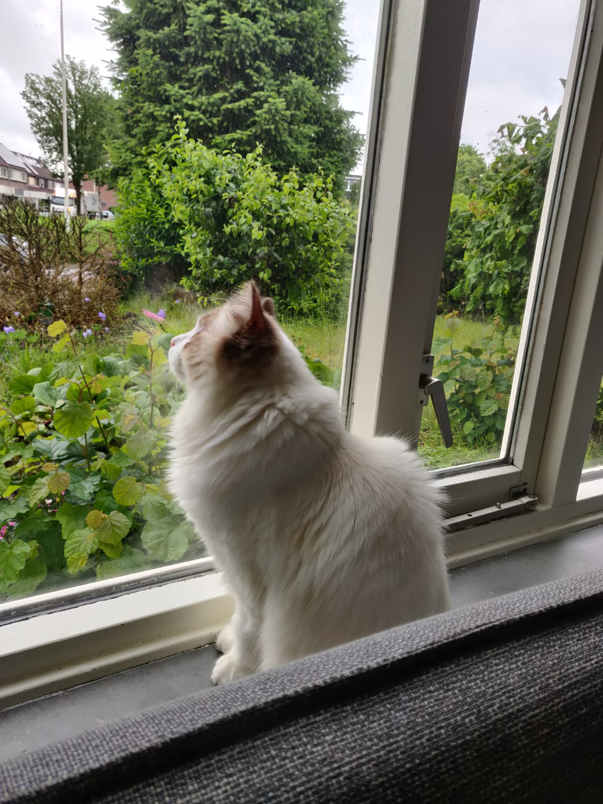

About Otje
Otje is our beloved Ragdoll Burmese cross cat. With his charming personality and unique looks, he has become a cherished member of our family. He loves to play, explore, and of course, cuddle up for a nap. Here, you'll find more about his adventures and some of our favorite moments with him.
Photo Gallery



Contact
If you would like to know more about Otje or just want to say hi, feel free to reach out at youremail@example.com.